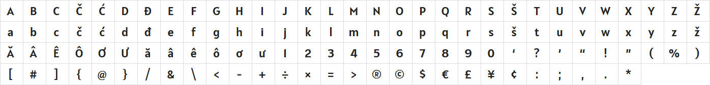
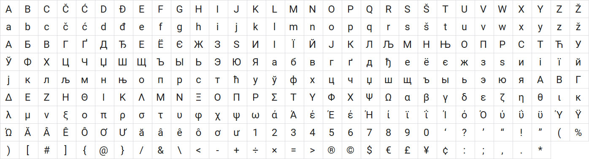

Typography
Launchphase UI utilizes two font families, "Alatsi" and "Roboto". These fonts are brought into the system via Google Fonts.
- To invoke the Roboto font for paragraphs or other body text, use: font-family: 'Roboto', sans-serif;
- To invoke the Alatsi font for headlines, use: font-family: 'Alatsi', sans-serif;
Headlines
Alatsi is a semicondensed geometric sans design which feels familiar, calm, trustable and contemporary. It is a little lighthearted or casual in feeling as well. The contemporary feeling comes from the treatment of the terminals and the pointed V A W. The calmness from the modest x height.
Paragraph and body text
Roboto has a dual nature. It has a mechanical skeleton and the forms are largely geometric. At the same time, the font features friendly and open curves. While some grotesks distort their letterforms to force a rigid rhythm, Roboto doesn’t compromise, allowing letters to be settled into their natural width. This makes for a more natural reading rhythm more commonly found in humanist and serif types.
